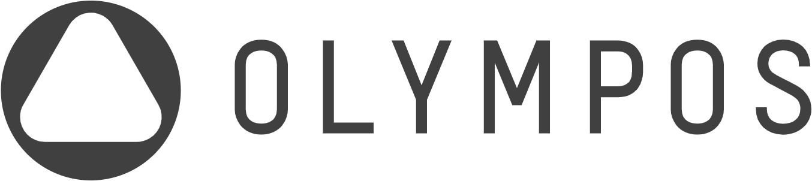

So we buy into the small funds that already own those start-ups at the old price — and when a top firm leads the next round, we buy the company again, direct, with no second layer of fees.
Olympos Fund of Funds · a Delaware vehicle · prepared for Gedik · August 2026
The market-structure analysis behind sections 3 and 4 is published at emrahyalaz.com/#vc-conviction — the 29-firm definition used there is the one used here.
The whole plan, in five sentences.
Twenty-nine venture firms in Silicon Valley backed 82% of every new billion-dollar US start-up by Series A since 2022. When one of them shows up, the price jumps.
We watch the feeders — the angels, scouts and one-person funds that get in before those twenty-nine. When enough of them move on the same founder, we mark it. On average a top firm shows up nine months later, and the price jumps.
Small funds already own a piece at the old price, so we buy into those funds. Then, when the top firm leads the round, we put money straight into the company as well.
That is it. Everything below is the evidence, and a model you can push around yourself.
What follows runs in the order the edge is built, then tested: what we saw first, whether it holds at scale, how we pick funds, where it pays, how we double down, what the model says, and what the model got right on real money.
Not a backtest of a formula — a delivery record. Since March 2024 we have sent a US venture firm a weekly list of stealth founders. Matching that list against what our candidate managers actually bought since then, 22 of their positions appear on our list first, by a median of 8.2 months.
| Founder · company | We flagged | Manager invested | Lead |
|---|---|---|---|
| Dan Shiebler + Shachar Hirshberg · Artemis | 2025-07-25 | Theory (Tunguz) 2026-04-15 | 9 mo |
| Snir Kodesh · Petual | 2025-04-18 | Quiet Capital 2026-04-23 | 12 mo |
| Daniel Shimoni + Tomer Mesika · Modus | 2025-09-26 | Soma 2026-07-29 | 10 mo |
| Leroy Kerry · Filed | 2024-08-30 | Day One (Bucher) 2025-05-21 | 9 mo |
| Shubham Choudhary + Vardhan Kapoor · FirstWork | 2024-07-26 | Soma 2025-02-27 | 7 mo |

Aug 2026This is the offer no other limited partner can make. We are not asking a manager to take our money and report back. We are handing them a feed that reached 22 of their own best names before they did.
Twenty-two cases could be luck. So we took every founder the system has ever flagged — 5,323 of them — found their company, and asked whether one of the 29 top firms later put money in. It happened 137 times, and the median gap between our flag and their cheque was 8.6 months. That gap is the product: it is how long a manager has to act on the feed before the round prices.
The standard way to rank early investors is to count how often they got in before a top firm. That ranks whoever writes the most cheques. The fix is a denominator: out of everything you seeded, what share drew top-firm money within two years? Across 26,636 companies the answer is 5.88%. That is the bar.
Y Combinator sits first on that list and 25th on ours. It precedes top firms constantly because it backs everyone. Gaingels sits ninth and lands below the base rate — a company it seeds is less likely to draw top-firm money than an average seeded company. Ranked by volume it reads as a signal; it is a mild warning.
Two things are happening to the twenty-nine at once. They are doing fewer deals at larger cheques — across 11,327 tier-one and feeder deals, deal counts fell in most sectors while average investment rose. And the companies that reach $10B concentrate exactly there: 18 of the 19 new US decacorns of 2026 minted in sectors where deal counts fell and cheques rose. Less discovery from them means more of it falls to the feeder layer — which is the layer we buy.
Getting in first is worthless if the top firms are already there. Measuring how long before a Series A the feeder layer buys, against how long before that same round the top firms buy, gives the size of the head start — sector by sector.
Aerospace is where we would extend next. It is the only sector with a wide head start and rising demand from the top firms — their deal count went from 28 to 41 in a year, the biggest jump on the board, and the median cheque went from $20M to $50M. It also minted 7 new US unicorns in 2026, behind only infrastructure, health and B2B. They are arriving in force, and still arriving late.
Two sectors we would not build a sensor for at all. In robotics and crypto the top firms are at seed before the feeder layer, so there is no head start to sell. And a warning about our home ground: in infrastructure the top firms cut their time from seed to Series A from 481 days to 283 in one year. The head start we have is real, and in the lane we source hardest it is closing fastest.
Money in a fund pays the manager a fee and a share of the profit. Money straight into a company pays neither. When our signal says a top firm is about to price a company our managers already own, we take the second bite directly — which is also the only place a fund this size can hold a position big enough to matter.
Three rounds we would have been offered had this fund opened in August 2024 — companies our managers already held, that later raised at a size and with a lead where an LP co-investment slot exists. Nineteen such windows were found; these are the three largest with a top-firm lead.
| Company | Our manager was already in | The round we could have joined |
|---|---|---|
| Avoca — AI agents for home services | Soma, Apr 2023 | $125M Series B, Apr 2026 · General Catalyst, Kleiner Perkins, Amplify |
| Northwood Space — satellite ground stations | Humba, Feb 2024 | $100M Series B, Jan 2026 · Andreessen Horowitz, 137 Ventures |
| DualEntry — AI-native accounting | Soma, May 2024 | $90M Series A, Oct 2025 · GV, Khosla, Lightspeed |
Every number below moves. The control that matters most is edge persistence — it sets how much of our measured advantage we assume survives into the next fund. It ships at 50%, because our own persistence test found roughly half of top performers stay top. Drag it to zero and the fund still returns 2.48x — because that removes our picking edge but not our access: the right to buy funds an ordinary limited partner cannot get into. Switching selection off removes both, and drops the fund to 1.6x.
| Fund / outcome | Net TVPI | Net IRR |
|---|---|---|
| Rows below are the median fund of each published category | ||
| Venture fund-of-funds — median | ~1.4–1.6x | ~8–10% |
| Venture fund-of-funds — top quartile | ~1.9–2.2x | ~12–15% |
| Direct US venture fund — median | ~1.8–2.0x | ~13–15% |
| Direct US venture fund — top quartile | ~2.5x+ | ~20%+ |
We applied the same construction rules to real deals from August 2024 and marked them to verified valuations. Two years in, that book stands at 1.25x of committed capital. The model's median path for year two is 1.14x, with a middle half of 1.03x to 1.31x. The real book sits inside the band, slightly ahead of the median.
A new Delaware vehicle. Gedik anchors $20M; Gedik raises a further $10M and we raise $10M, for a first close of about $40M. Olympos contributes the signal engine, the manager measurement, and the relationships that turn an allocation into an invitation. From there the target is a $100M fund of funds.
At $40M the fund holds about twelve managers and a direct sleeve of ten to fourteen positions — the shape the model says is right, and the shape our own 2024 book supports. Below roughly $25M the arithmetic breaks: cheques fall under what oversubscribed funds will accept, fixed costs stop being rounding, and the direct sleeve gets too few positions to be anything but a lottery.
The near-term work is diligence, not conviction. Four of our candidate managers cannot be scored at all, and the ones the measurement likes best are names we found this month. That is the right order — measure, then meet, then commit.
Manager returns. Each manager's net TVPI is drawn from a lognormal with a median of 1.79x before selection, dispersion fitted to observed single-fund spread (10th percentile ~0.6x, 90th ~4x). The selection premium is derived from the measured hit rate as 0.35 × ln(lift), not assigned by judgement — a manager measured at 2.7x the base rate earns a premium of 0.35, or about a 1.42x multiplier on median outcome. Managers with no measurement receive the roster average and are flagged as unscored.
Why selection pays. Not by avoiding losers. Oversubscribed funds ration allocation, so an ordinary limited partner cannot buy the right tail at all — in the model this is a cap on how large any single manager outcome can be, lifted from 2.3x to 25x when selection is on. Turn selection off and drop the direct sleeve and the fund returns about 1.5x with roughly a fifth of scenarios below cost, against a published fund-of-funds median of 1.4-1.6x and a comparable loss rate. That calibration was not fitted; it is the check on everything else.
Estimation error. Each manager's premium is drawn per scenario around its measured value, with a spread set by how many seed entries the measurement rests on — five entries give a wide draw, 177 a tight one. Unmeasured managers get the widest spread of all. This is why the roster chart labels entry counts: they are inputs to the model, not decoration.
What manager count does and does not do. The model shows almost no return penalty for holding six managers instead of twelve, because the dominant risks — the vintage and the direct sleeve — are common to all of them. The case for twelve is not diversification of returns; it is that our premiums rest on small samples, and a concentrated fund is a bet that a handful of those estimates are right.
Fees and costs. An 8% haircut on terminal value covers the vehicle's own management fee and carried interest, plus fixed operating cost of about $60K a year for administration, audit, tax, legal and compliance — a quoted figure, not an estimate. Fixed cost is flat in dollars, so it bites small funds hardest and is what sets the minimum viable size.
Cash flows. Capital called evenly over five years. Distributions of 60% of terminal value paid from year six on a rising schedule, with the remaining 40% held as residual value at year ten. Seed funds do not return cash before then, and an earlier schedule was flattering the IRR by roughly two points. IRR is computed on those flows, which is why it is higher than the tenth root of the multiple — committed capital is not outstanding for the full ten years.
Persistence. The roster is the top of 816 measured investors, so its hit rates are in-sample maxima and will not repeat at full strength. Our own Seed-100 persistence test found 48 of 100 top performers persisted, with a median 22-place move, so the measured premium is discounted by half before the model uses it. The slider exposes this: at 100% the fund returns roughly a point and a half more, at zero it returns the unselected case.
Vintage risk is regime-switching, not lognormal. A thin-tailed draw cannot produce a 2000 or a 2021, yet both happened inside 25 years. The model gives 18% of vintages a bust regime centred near a 55% haircut, which puts a fund-halving vintage at 12% rather than the 6.5% a lognormal allows. This is the single largest driver of the chance of losing money, and no amount of manager selection diversifies it away.
The direct sleeve. Positions of about $1M each, so the count moves with both fund size and sleeve share. Single-company outcomes are drawn from a power law with dispersion of 1.45 in logs, calibrated so the sleeve returns 1.27x without selection — the figure our own 2024 window measured for random co-investment — and 2.20x with it. That 1.7x skill premium is the largest single assumption on this page. Two corrections are applied and both reduce the number: the sleeve holds the same companies as the fund sleeve, so part of its fate is shared rather than independent; and allocation is contingent on being a meaningful limited partner, so if cheques fall below what a manager will accept, the co-investment invitations do not arrive either.
Market risk. A single vintage factor with dispersion of 0.46 in logs multiplies every path. This is the dominant risk in a fund of funds and it is not diversifiable by holding more managers — 2021 vintages are the reference case.
What is measured and what is assumed. Measured: the 22 convergence cases, the 8.6-month median lead, the 5.88% base rate and every manager hit rate, the sector head starts, the 2024 marks. Assumed: that a measured hit rate translates into fund returns at the stated coefficient, that informed co-investment returns 2.20x where random co-investment measured 1.27x, and that access to oversubscribed funds can be bought with a signal feed. The first assumption is the one that matters most and the one Fund I exists to test.
Not an offer. Illustrative modelling for discussion between Olympos and Gedik. Simulated results are not returns; the 2024 figures are marks-based estimates, not audited performance. Past patterns do not predict future outcomes, and every forward number on this page is a model output rather than a forecast.